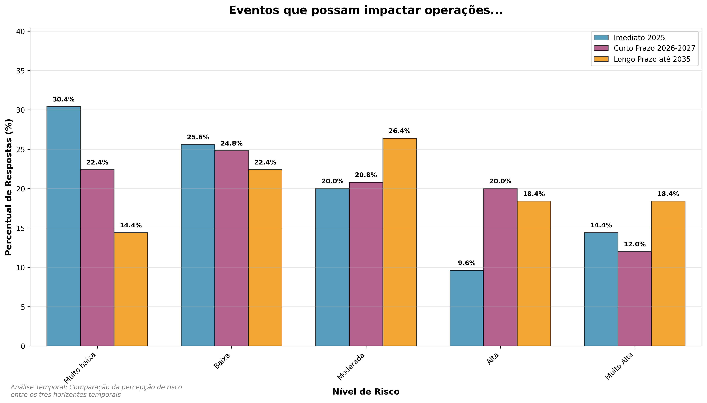
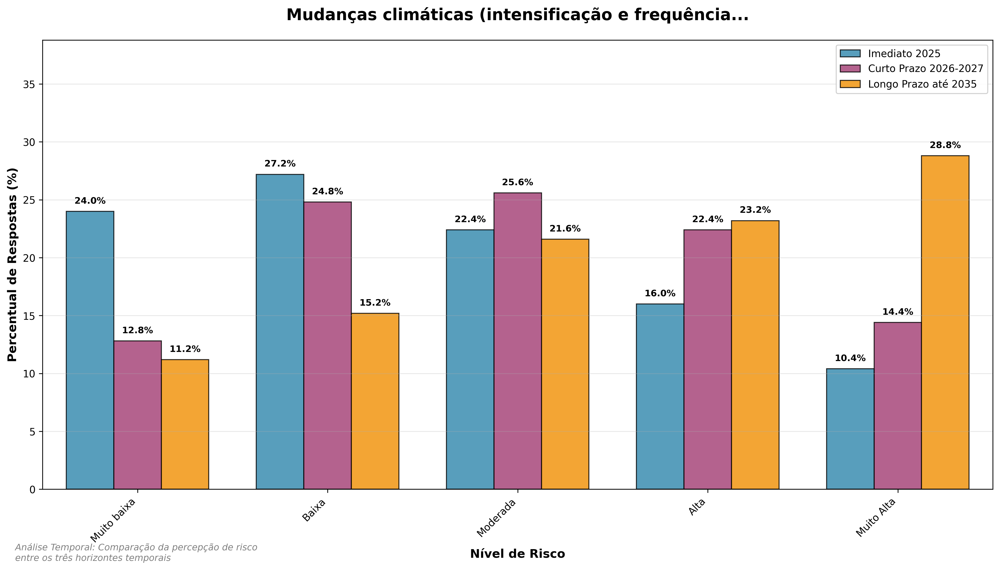
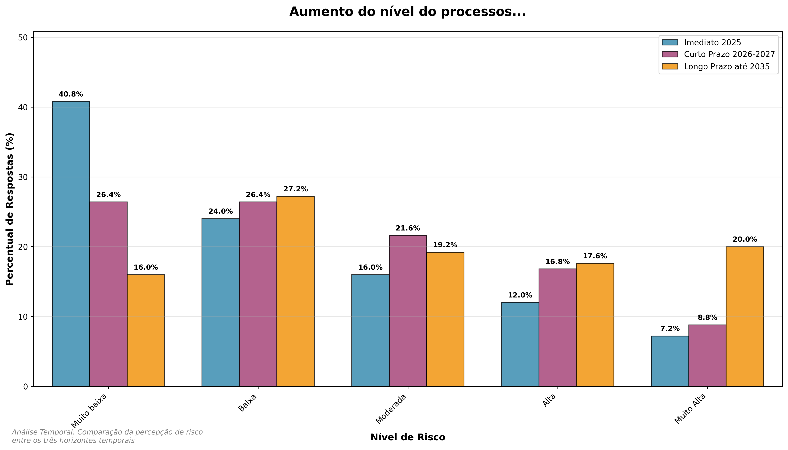
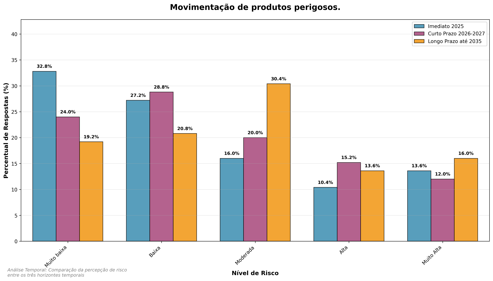

8 Análise de Riscos Ambientais
Esta seção apresenta a análise detalhada dos riscos ambientais identificados no questionário, organizados por horizontes temporais e variáveis específicas.
8.1 Visão Geral dos Riscos Ambientais
Os riscos ambientais foram avaliados em três horizontes temporais:
- Imediato (2025): Riscos que requerem atenção imediata
- Curto Prazo (2026-2027): Riscos emergentes que demandam planejamento
- Longo Prazo (até 2035): Riscos estratégicos que requerem visão de futuro
8.2 Panorama do Período Imediato

- Licenciamento ambiental: 28,8% em níveis altos
- Presença de agentes patogênicos: 27,2% em níveis altos
- Mudanças climáticas (eventos extremos): 26,4% em níveis altos
Os resultados mostram que os principais focos de atenção estão ligados à gestão institucional, aos riscos sanitários e aos eventos climáticos extremos, evidenciando a necessidade de controles robustos e operações resilientes.
O licenciamento ambiental aparece como o risco mais expressivo, com 28,8% das respostas em níveis altos (4-5). A percepção de atrasos ou não conformidades indica risco direto para suspensão de obras, imposição de medidas compensatórias e incertezas regulatórias, comprometendo planejamento e execução.
Na sequência, destaca-se a presença de agentes patogênicos e deficiências de saneamento, com 27,2% das respostas em níveis altos. O dado evidencia preocupação com riscos à saúde ocupacional e à imagem institucional, reforçando a necessidade de investimentos contínuos em infraestrutura sanitária e monitoramento microbiológico.
O terceiro risco mais relevante é o de mudanças climáticas, com 26,4% das respostas em níveis altos (4–5). Eventos severos — tempestades, marés de tempestade ou ondas de calor — podem afetar diretamente a infraestrutura portuária, a segurança operacional e a continuidade logística.
8.3 Análise Temporal da Dimensão Ambiental

Os riscos ambientais totalizam refletem a crescente conscientização sobre questões sustentáveis no setor portuário. A análise temporal mostra como as percepções sobre impactos ambientais evoluem, indicando possíveis mudanças nas prioridades de mitigação ao longo do tempo.
8.3.1 Insights da Análise Temporal Ambiental
A análise temporal dos riscos ambientais revela o padrão mais preocupante entre todas as dimensões:
8.3.1.1 Piora Ambiental Significativa
- Delta médio de +0,56: Maior piora entre todas as dimensões
- 9 variáveis com piora crítica (+1.0 ponto): Mudanças climáticas, aumento do nível do mar, poluição, espécies exóticas, resíduos, desmatamento, ruídos, patógenos, produtos perigosos
- Tendência de deterioração acelerada: A maioria dos riscos ambientais mostra piora progressiva
8.3.1.2 Padrões Específicos Identificados
- Mudanças Climáticas como Principal Risco: Evolui de mediana 2.0 para 4.0, tornando-se crítica
- Riscos Costeiros em Ascensão: Aumento do nível do mar e erosão costeira mostram piora significativa
- Pressão Regulatória Crescente: Licenciamento ambiental e descarbonização tornam-se mais críticos
8.3.1.3 Destaques da Evolução Temporal
- Risco Mais Crítico em 2035: Aumento da temperatura média (52.0% em risco alto)
- Maior Crescimento Relativo: Desmatamento (+118.8% no risco alto)
- Transformação Regulatória: Descarbonização do transporte marítimo (+161.1% no risco alto)
8.3.1.4 Implicações Estratégicas para a Dimensão Ambiental
A análise temporal ambiental exige ação imediata:
1. Adaptação Climática Urgente: Investir em infraestrutura resiliente a eventos extremos
2. Transição para Baixo Carbono: Acelerar planos de descarbonização e energias renováveis
3. Gestão Costeira Integrada: Desenvolver estratégias para proteção contra aumento do nível do mar
4. Biodiversidade e Ecossistemas: Implementar programas robustos de conservação e restauração
8.4 Exame das Variáveis de Risco: Resultados e Tendências
8.4.1 Perda de biodiversidade e colapso de ecossistemas

Evolução da Percepção de Risco: Os dados mostram uma tendência de aumento gradual na percepção de risco associada à perda de biodiversidade e ao colapso dos ecossistemas ao longo do tempo. Observa-se que à medida que o horizonte temporal se amplia cresce o número de respondentes que classificam o risco como alto ou muito alto. Contexto Detalhado por Período: Período Imediato (2025): Apenas 16% dos participantes percebem o risco em níveis altos (4) ou muito altos (5), com mediana igual a 2. Curto Prazo (2026–2027): A preocupação aumenta, com 26,4% dos respondentes avaliando o risco como alto ou muito alto, e mediana de 3, sinalizando maior sensibilidade às possíveis ameaças ambientais. Longo Prazo (até 2035): A percepção de risco se intensifica expressivamente, alcançando 41,6% das respostas nos níveis 4-5, com mediana também em 3, refletindo uma visão mais crítica e realista sobre os impactos cumulativos da degradação ambiental. Implicações Estratégicas: A perda de biodiversidade e o colapso dos ecossistemas podem comprometer serviços ecossistêmicos essenciais, como a proteção costeira, a manutenção da qualidade da água e o equilíbrio das cadeias tróficas. Esses efeitos podem gerar restrições operacionais, exigência de medidas compensatórias e conflitos socioambientais, ameaçando a sustentabilidade ambiental do complexo portuário e, consequentemente, a manutenção de suas licenças de operação. |
8.4.2 Eventos que possam impactar acessos e operações portuárias

Evolução da Percepção de Risco: A percepção de risco associada à ocorrência de eventos climáticos extremos que possam impactar as operações portuárias tende a aumentar progressivamente ao longo do tempo.
Contexto Detalhado por Período:
Período Imediato (2025): Predomina a percepção de baixo risco, com apenas 24% dos respondentes avaliando os níveis alto (4) ou muito alto (5) e mediana igual a 2.
Curto Prazo (2026–2027): Observa-se aumento gradual da preocupação, com 32% das respostas concentradas nos níveis 4-5, e mediana de 3, sinalizando a expectativa de maior recorrência de eventos disruptivos em curto prazo.
Longo Prazo (até 2035): A percepção de risco se intensifica, atingindo 36,8% dos respondentes nos níveis alto (4) e muito alto (5), com mediana mantida em 3.
Implicações Estratégicas: Os eventos climáticos extremos, como secas, enchentes, chuvas intensas e tempestades podem expor a infraestrutura portuária a danos estruturais, falhas no fornecimento de energia e interrupções em serviços essenciais. Essas condições podem resultar em paralisação total ou parcial das operações, elevação dos custos de manutenção e aumento dos riscos ocupacionais, comprometendo a resiliência climática do empreendimento portuário e sua capacidade de assegurar a continuidade operacional diante de cenários climáticos cada vez mais extremos.
8.4.3 Mudanças climáticas (intensificação e aumento da frequência de fenômenos relacionados)

Evolução da Percepção de Risco: Há uma tendência clara de aumento progressivo na percepção de risco associada ao aquecimento global e à intensificação das ondas de calor, refletindo a crescente preocupação com seus efeitos sobre as operações portuárias e a infraestrutura crítica. Esse padrão reflete a expectativa de que o aquecimento global e os eventos de calor extremo se tornem mais frequentes e intensos, exigindo planejamento adaptativo e medidas de mitigação mais robustas.
Contexto Detalhado por Período:
Período Imediato (2025): A percepção de risco é moderada, com 26,4% dos respondentes classificando o risco como alto (4) ou muito alto (5), e mediana igual a 2, indicando que, no curto horizonte, o impacto do aumento da temperatura ainda é percebido de forma limitada e localizada.
Curto Prazo (2026–2027): Observa-se elevação significativa da preocupação, com 36,8% das respostas situadas nos níveis alto ou muito alto, e mediana de 3, o que revela maior conscientização sobre os efeitos das ondas de calor na produtividade, no bem-estar dos trabalhadores e na eficiência operacional.
Longo Prazo (até 2035): A percepção de risco atinge seu nível máximo, com 52% dos respondentes apontando risco alto ou muito alto, e mediana de 4, demonstrando reconhecimento do agravamento dos impactos do aumento da temperatura média sobre a resiliência térmica das infraestruturas e a segurança das atividades portuárias.
Implicações Estratégicas: O aumento da temperatura média e a ocorrência de ondas de calor mais intensas e prolongadas podem provocar sobreaquecimento de equipamentos, redução da eficiência energética, danos à infraestrutura, e maior risco ocupacional para trabalhadores expostos. Essas condições podem resultar em interrupções operacionais, elevação dos custos de manutenção e climatização, e impactos diretos na saúde e segurança das equipes portuárias, comprometendo a resiliência climática e a continuidade das operações. Dessa forma, é essencial que os portos adotem planos de adaptação climática, como melhorias na ventilação e isolamento térmico, uso de materiais resistentes ao calor, ajuste dos turnos de trabalho e monitoramento em tempo real de temperaturas críticas, visando garantir a segurança operacional e a eficiência energética em cenários de aquecimento global crescente.
8.4.4 Crise na disponibilidade de recursos naturais (água e produção de alimentos)

Evolução da Percepção de Risco: A escassez de água e alimentos deixa de ser considerada um risco periférico e consolida tendência de deterioração: o percentual em níveis 4-5 cresce de 22,4% para 48,8% entre 2025 e 2035, enquanto o grupo que via o risco como baixo cai de 61,6% para 30,4%.
Contexto Detalhado por Período:
Período Imediato (2025): Mediana em 2 e 22,4% das respostas nos níveis altos indicam atenção moderada, com maioria (61,6%) ainda percebendo disponibilidade aceitável de recursos críticos para abastecimento portuário.
Curto Prazo (2026-2027): A mediana sobe para 3 e o risco alto avança para 34,4%, refletindo alerta sobre pressões em sistemas hídricos regionais e cadeias agroindustriais que sustentam trabalhadores e hinterlândias.
Longo Prazo (até 2035): O risco entra em patamar estrutural, com 48,8% das respostas nos níveis 4-5, mediana 3 e redução do grupo de baixo risco para 30,4%, sinalizando disputas crescentes por recursos essenciais.
Implicações Estratégicas: A redução na disponibilidade de água e alimentos pode gerar paralisações sanitárias, aumento de custos operacionais e conflitos socioambientais nas áreas de influência dos portos. Antecipar-se requer planos de uso eficiente da água, diversificação de fornecedores de suprimentos críticos, programas de apoio alimentar às comunidades portuárias e participação ativa em agendas de segurança hídrica e alimentar regionais.
8.4.5 Desastres naturais não relacionados ao clima, como terremotos, incêndios florestais, maremotos, subsidência

Evolução da Percepção de Risco: Os dados mostram uma tendência de aumento da percepção de risco associada à ocorrência de desastres naturais não relacionados ao clima, como terremotos, incêndios florestais, maremotos e processos de subsidência. Embora a maioria dos respondentes ainda perceba tais eventos como de baixo risco, há uma pequena mudança de percepção nos horizontes de curto e longo prazo.
Contexto Detalhado por Período:
Período Imediato (2025): Predomina uma percepção de baixo risco, com apenas 15,2% das respostas concentradas nos níveis alto (4) ou muito alto (5), e mediana igual a 2, o que indica que tais eventos são vistos como improváveis no curto horizonte.
Curto Prazo (2026–2027): Observa-se aumento gradual da preocupação, com 21,6% dos respondentes classificando o risco como alto ou muito alto, e mediana de 3.
Longo Prazo (até 2035): A tendência de elevação da percepção de risco se mantém, alcançando 24,8% das respostas nos níveis 4 e 5.
Implicações Estratégicas: A ocorrência de desastres naturais não relacionados ao clima, como terremotos, incêndios florestais, maremotos e processos de subsidência, pode ocasionar danos estruturais súbitos em píeres, armazéns, tanques de armazenamento e vias de acesso. Esses eventos podem levar à interrupção imediata das operações portuárias, elevação dos riscos de vazamentos, explosões e contaminações ambientais, e comprometimento da integridade estrutural e da segurança ambiental da área portuária. Assim, torna-se essencial o planejamento preventivo, incluindo monitoramento geotécnico e sísmico, planos de evacuação e contingência, e estratégias de resposta rápida, de modo a mitigar os impactos e garantir a continuidade operacional em emergências.
8.4.6 Aumento do nível do mar e processos erosivos costeiros

Evolução da Percepção de Risco: o gráfico mostra uma tendência clara de aumento da percepção de risco associada ao aumento do nível do mar e aos processos erosivos costeiros, indicando que os respondentes reconhecem de forma crescente os impactos estruturais e operacionais que esses fenômenos podem provocar no ambiente portuário.
Contexto Detalhado por Período:
Período Imediato (2025): predomina uma percepção de baixo risco, com 19,2% das respostas classificando o risco como alto (4) ou muito alto (5) e mediana igual a 2, o que sugere que, no curto horizonte, o aumento do nível do mar ainda é percebido como uma ameaça distante ou de baixa frequência.
Curto Prazo (2026–2027): observa-se elevação gradual da preocupação, com 25,6% dos respondentes avaliando o risco como alto ou muito alto, mantendo mediana em 2.
Longo Prazo (até 2035): a percepção de risco se intensifica expressivamente, com 37,6% das respostas concentradas nos níveis alto (4) e muito alto (5), e mediana de 3, evidenciando reconhecimento crescente da vulnerabilidade dos portos diante da elevação do nível do mar e da erosão costeira.
Implicações Estratégicas: o aumento do nível do mar e a intensificação dos processos erosivos costeiros podem ocasionar perda gradual de áreas operacionais e instabilidade estrutural em cais, quebra-mares, taludes e vias de acesso. Essas condições demandam a intensificação das manutenções preventivas, investimentos emergenciais em obras de contenção e proteção costeira, em casos críticos, a relocalização de ativos estratégicos. Tais medidas, embora necessárias, podem comprometer o planejamento de longo prazo e a viabilidade econômica da infraestrutura portuária, tornando imprescindível o monitoramento contínuo das variações do nível do mar, o uso de modelagens hidrodinâmicas preditivas e a adoção de soluções baseadas na natureza para mitigar os efeitos erosivos e garantir a resiliência costeira e operacional dos portos.
8.4.7 Poluição da água e sedimentos em áreas portuárias por contaminantes orgânicos e inorgânicos, tais como hidrocarbonetos, metais, pesticidas e nutrientes

Contexto Detalhado por Período: |
Período Imediato (2025): A percepção de risco é ainda moderada, com 24% das respostas classificando o risco como alto (4) ou muito alto (5), e mediana igual a 2, o que sugere que, no curto prazo, a maioria dos respondentes não considera a escassez hídrica uma ameaça imediata à operação portuária. |
Curto Prazo (2026–2027): Observa-se aumento significativo da preocupação, com 32% das respostas concentradas nos níveis alto ou muito alto, mantendo mediana em 2, indicando maior percepção sobre possíveis restrições no abastecimento de água e seus impactos sobre a eficiência operacional. |
Longo Prazo (até 2035): A percepção de risco se intensifica de forma expressiva, com 41,6% dos respondentes avaliando o risco como alto (4) ou muito alto (5) e mediana de 3, revelando expectativa de agravamento da crise hídrica e de seus efeitos sobre as atividades industriais, logísticas e sociais no entorno portuário. |
Implicações Estratégicas: A escassez de recursos hídricos e a crise de abastecimento podem gerar limitações no fornecimento de água para uso industrial, sanitário e de suporte às tripulações, além de provocar pressões adicionais sobre as cadeias logísticas de suprimento de alimentos e insumos. Tais condições podem exigir a adoção de medidas de racionamento interno, aumento dos custos operacionais e tensões sociais com as comunidades vizinhas, comprometendo a segurança hídrica e o relacionamento socioambiental do empreendimento portuário. Nesse contexto, torna-se essencial implementar estratégias de gestão integrada de recursos hídricos, como reúso e reciclagem de água, instalação de sistemas de captação de águas pluviais, monitoramento de consumo em tempo real e parcerias com autoridades locais para garantir o abastecimento sustentável, fortalecendo a resiliência hídrica e a sustentabilidade operacional dos portos. |
8.4.8 Movimentação de produtos perigosos

Evolução da Percepção de Risco: O gráfico demonstra uma tendência crescente de percepção de risco associada à introdução de espécies exóticas invasoras, organismos aquáticos nocivos e agentes patogênicos, fenômeno frequentemente vinculado à descarga de água de lastro. Essa evolução sugere maior reconhecimento dos riscos ambientais e regulatórios para o setor portuário.
Contexto Detalhado por Período:
Período Imediato (2025): A percepção de risco é moderada, com 24% das respostas classificando o risco como alto (4) ou muito alto (5), e mediana igual a 2, indicando que, no horizonte mais próximo, os impactos são percebidos como pontuais ou de baixa probabilidade.
Curto Prazo (2026–2027): Observa-se elevação gradual da preocupação, com 27,2% dos respondentes avaliando o risco como alto ou muito alto, mantendo mediana em 2, refletindo maior atenção às exigências regulatórias internacionais e à gestão de águas de lastro.
Longo Prazo (até 2035): A percepção de risco se intensifica expressivamente, alcançando 35,2% das respostas nos níveis alto (4) e muito alto (5), e mediana igual a 3, evidenciando reconhecimento de que a proliferação de espécies invasoras representa ameaça crescente à biodiversidade marinha e às atividades portuárias.
Implicações Estratégica: A introdução de espécies exóticas invasoras, organismos aquáticos nocivos e agentes patogênicos, seja por descarga de água de lastro ou outro tipo de descarte pode causar desequilíbrios ecológicos graves, com competição entre espécies nativas e invasoras, alteração de habitats e danos irreversíveis à biodiversidade local. Essas ocorrências podem demandar ações corretivas onerosas e restrições adicionais de atracação e manuseio de embarcações, impactando diretamente a conformidade ambiental e a reputação institucional do porto. Entre as medidas preventivas prioritárias destacam-se: monitoramento e registro contínuo das operações de lastro, adoção de tecnologias de tratamento de água de lastro a bordo e capacitação das equipes para resposta rápida a incidentes ambientais. Essas ações são fundamentais para assegurar a conformidade com normas internacionais, preservar os ecossistemas costeiros e fortalecer a governança ambiental do complexo portuário.
8.4.9 Presença de agentes patogênicos (Deficiência no tratamento de esgoto ou saneamento)

Evolução da Percepção de Risco: os dados evidenciam uma tendência de elevação gradual na percepção de risco associada à presença de agentes patogênicos e à deficiência no tratamento de esgoto e nas condições de saneamento básico, tanto no ambiente portuário quanto em seu entorno.
Contexto Detalhado por Período:
Período Imediato (2025): A percepção de risco é moderada, com 27,2% dos respondentes classificando o risco como alto (4) ou muito alto (5), e mediana igual a 2, indicando que, no curto prazo, o problema é reconhecido, mas ainda restrito a situações pontuais ou controláveis.
Curto Prazo (2026–2027): Observa-se aumento gradual da preocupação, com 29,6% das respostas concentradas nos níveis alto ou muito alto, mantendo mediana em 2, o que demonstra maior atenção à relação entre saneamento, saúde pública e segurança ocupacional.
Longo Prazo (até 2035): a percepção de risco atinge seu ponto mais elevado, com 30,4% das respostas nos níveis 4–5 e mediana de 3, refletindo reconhecimento crescente dos impactos sanitários e reputacionais decorrentes da má gestão de efluentes e resíduos urbanos próximos às áreas portuárias.
Implicações Estratégicas: a presença de agentes patogênicos, associada à deficiência no tratamento de esgoto e nas condições de saneamento, pode gerar riscos sanitários significativos para trabalhadores portuários e comunidades do entorno. Essas condições podem resultar em restrições de acesso a áreas operacionais, afastamento de pessoal por motivos de saúde, e sanções ou autuações por órgãos de vigilância sanitária, comprometendo tanto a saúde ocupacional quanto a imagem institucional do complexo portuário. Para mitigar esses riscos, é essencial adotar medidas como: ampliação da cobertura de saneamento e drenagem, instalação de sistemas eficientes de tratamento de efluentes sanitários e industriais, monitoramento microbiológico periódico da qualidade da água, e programas de prevenção e saúde ocupacional voltados à proteção dos trabalhadores expostos. Essas ações fortalecem a resiliência sanitária e a governança ambiental do porto, contribuindo para a sustentabilidade e a confiança institucional a longo prazo.
8.4.10 Introdução de espécies exóticas, organismos aquáticos nocivos e agentes patogênicos

Evolução da Percepção de Risco: O gráfico demonstra uma tendência crescente de percepção de risco associada à introdução de espécies exóticas invasoras, organismos aquáticos nocivos e agentes patogênicos, fenômeno frequentemente vinculado à descarga de água de lastro. Essa evolução sugere maior reconhecimento dos riscos ambientais e regulatórios para o setor portuário.
Contexto Detalhado por Período:
Período Imediato (2025): A percepção de risco é moderada, com 24% das respostas classificando o risco como alto (4) ou muito alto (5), e mediana igual a 2, indicando que, no horizonte mais próximo, os impactos são percebidos como pontuais ou de baixa probabilidade.
Curto Prazo (2026–2027): Observa-se elevação gradual da preocupação, com 27,2% dos respondentes avaliando o risco como alto ou muito alto, mantendo mediana em 2, refletindo maior atenção às exigências regulatórias internacionais e à gestão de águas de lastro.
Longo Prazo (até 2035): A percepção de risco se intensifica expressivamente, alcançando 35,2% das respostas nos níveis alto (4) e muito alto (5), e mediana igual a 3, evidenciando reconhecimento de que a proliferação de espécies invasoras representa ameaça crescente à biodiversidade marinha e às atividades portuárias.
Implicações Estratégica: A introdução de espécies exóticas invasoras, organismos aquáticos nocivos e agentes patogênicos, seja por descarga de água de lastro ou outro tipo de descarte pode causar desequilíbrios ecológicos graves, com competição entre espécies nativas e invasoras, alteração de habitats e danos irreversíveis à biodiversidade local. Essas ocorrências podem demandar ações corretivas onerosas e restrições adicionais de atracação e manuseio de embarcações, impactando diretamente a conformidade ambiental e a reputação institucional do porto. Entre as medidas preventivas prioritárias destacam-se: monitoramento e registro contínuo das operações de lastro, adoção de tecnologias de tratamento de água de lastro a bordo e capacitação das equipes para resposta rápida a incidentes ambientais. Essas ações são fundamentais para assegurar a conformidade com normas internacionais, preservar os ecossistemas costeiros e fortalecer a governança ambiental do complexo portuário.
8.4.11 Poluição atmosférica

Evolução da Percepção de Risco: O gráfico revela uma tendência de aumento gradual na percepção de risco associada à poluição atmosférica gerada pelas atividades portuárias e industriais, especialmente com o avanço do horizonte temporal. A preocupação crescente reflete o reconhecimento dos impactos das emissões de gases e material particulado sobre a saúde pública, a regulação ambiental e as metas de descarbonização do setor. Esse comportamento reflete a previsão de maior rigor regulatório e pressão social sobre os portos para adoção de tecnologias limpas e práticas sustentáveis, especialmente diante da ampliação de políticas de neutralidade de carbono e das metas da IMO para redução das emissões de GEE no transporte marítimo.
Contexto Detalhado por Período:
Período Imediato (2025): A percepção de risco é relativamente baixa, com 18,4% das respostas classificando o risco como alto (4) ou muito alto (5) e mediana igual a 2, sugerindo que, no curto horizonte, o problema é percebido como localizado ou sob controle operacional.
Curto Prazo (2026–2027): Há aumento considerável da preocupação, com 27,2% dos respondentes avaliando o risco como alto ou muito alto, e mediana de 3, indicando maior consciência sobre a contribuição das operações portuárias para as emissões atmosféricas e seus reflexos sobre a qualidade do ar.
Longo Prazo (até 2035): A percepção de risco se intensifica expressivamente, alcançando 36% das respostas nos níveis 4-5, com mediana mantida em 3, demonstrando preocupação crescente com o cumprimento de normas ambientais mais rígidas e com o impacto cumulativo das emissões sobre as comunidades portuárias.
Implicações Estratégicas: A poluição atmosférica gerada por embarcações atracadas, veículos, equipamentos portuários e atividades industriais associadas pode levar ao aumento das concentrações de material particulado e gases poluentes (como NOx, SOx e CO₂) na área de influência do porto. Essas condições podem resultar em agravamento de problemas respiratórios nas populações expostas, elevação da pressão regulatória e exigência de mitigação de emissões, além de impactar negativamente a aceitação social do empreendimento. Entre as principais medidas de mitigação destacam-se: instalação de sistemas de fornecimento de energia em terra, substituição progressiva de equipamentos e veículos por versões eletrificadas ou híbridas, uso de combustíveis de baixo carbono e filtros antipoluição, e monitoramento contínuo da qualidade do ar nas zonas portuárias e urbanas adjacentes. A adoção dessas práticas é essencial para garantir a conformidade com as metas de descarbonização, fortalecer a reputação institucional e contribuir para a sustentabilidade e competitividade do porto em longo prazo.
Evolução da Percepção de Risco: O gráfico revela uma tendência de aumento gradual na percepção de risco associada à poluição atmosférica gerada pelas atividades portuárias e industriais, especialmente com o avanço do horizonte temporal. A preocupação crescente reflete o reconhecimento dos impactos das emissões de gases e material particulado sobre a saúde pública, a regulação ambiental e as metas de descarbonização do setor. Esse comportamento reflete a previsão de maior rigor regulatório e pressão social sobre os portos para adoção de tecnologias limpas e práticas sustentáveis, especialmente diante da ampliação de políticas de neutralidade de carbono e das metas da IMO para redução das emissões de GEE no transporte marítimo.
Contexto Detalhado por Período:
Período Imediato (2025): A percepção de risco é relativamente baixa, com 18,4% das respostas classificando o risco como alto (4) ou muito alto (5) e mediana igual a 2, sugerindo que, no curto horizonte, o problema é percebido como localizado ou sob controle operacional.
Curto Prazo (2026–2027): Há aumento considerável da preocupação, com 27,2% dos respondentes avaliando o risco como alto ou muito alto, e mediana de 3, indicando maior consciência sobre a contribuição das operações portuárias para as emissões atmosféricas e seus reflexos sobre a qualidade do ar.
Longo Prazo (até 2035): A percepção de risco se intensifica expressivamente, alcançando 36% das respostas nos níveis 4-5, com mediana mantida em 3, demonstrando preocupação crescente com o cumprimento de normas ambientais mais rígidas e com o impacto cumulativo das emissões sobre as comunidades portuárias.
Implicações Estratégicas: A poluição atmosférica gerada por embarcações atracadas, veículos, equipamentos portuários e atividades industriais associadas pode levar ao aumento das concentrações de material particulado e gases poluentes (como NOx, SOx e CO₂) na área de influência do porto. Essas condições podem resultar em agravamento de problemas respiratórios nas populações expostas, elevação da pressão regulatória e exigência de mitigação de emissões, além de impactar negativamente a aceitação social do empreendimento. Entre as principais medidas de mitigação destacam-se: instalação de sistemas de fornecimento de energia em terra, substituição progressiva de equipamentos e veículos por versões eletrificadas ou híbridas, uso de combustíveis de baixo carbono e filtros antipoluição, e monitoramento contínuo da qualidade do ar nas zonas portuárias e urbanas adjacentes. A adoção dessas práticas é essencial para garantir a conformidade com as metas de descarbonização, fortalecer a reputação institucional e contribuir para a sustentabilidade e competitividade do porto em longo prazo.
8.4.12 Ruídos e vibrações

Evolução da Percepção de Risco: O gráfico indica uma tendência de aumento gradual na percepção de risco relacionada a ruídos e vibrações provenientes das operações portuárias (movimentação de cargas, guindastes, equipamentos de pátio e tráfego pesado), indicando vulnerabilidade crescente do relacionamento porto-cidade a esse tema.
Contexto Detalhado por Período:
Imediato (2025): 17,6% dos respondentes classificam o risco como alto (4) ou muito alto (5) e mediana igual a 2. Predomina a leitura de risco baixo a moderado no curtíssimo prazo.
Curto Prazo (2026–2027): 20,8% em níveis 4-5 e mediana igual a 2. Sinaliza elevação discreta da preocupação, com maior atenção a incômodos crônicos e reclamações da vizinhança.
Longo Prazo (até 2035): 27,2% em 4-5 e mediana igual a 3. A percepção se intensifica, refletindo expectativa de maior pressão social e regulatória e de expansão operacional que amplia fontes de ruído e vibração.
Implicações Estratégicas: Os ruídos e vibrações associados à movimentação de cargas, operação de guindastes, equipamentos de pátio e tráfego de veículos pesados podem gerar incômodos crônicos e efeitos adversos à saúde e ao bem-estar de comunidades vizinhas e trabalhadores. Tais condições podem levar a restrições de horários de operação, exigência de barreiras acústicas, adequações de layout e até ações judiciais de moradores, comprometendo o relacionamento porto-cidade e a flexibilidade operacional do terminal. Dente as medidas recomendadas destacam-se: planos de gestão de ruído com metas e monitoramento contínuo e painéis públicos e zonas tampão, barreiras acústicas e revisão de rotas internas para reduzir exposição.
8.4.13 Gerenciamento inadequado dos resíduos sólidos

Evolução da Percepção de Risco: O gráfico indica uma tendência de aumento gradual na percepção de risco relacionada ao gerenciamento inadequado dos resíduos sólidos.
Contexto Detalhado por Período:
Imediato (2025): 19,2% dos respondentes classificam o risco como alto (4) ou muito alto (5) e mediana igual a 2. Predomina a percepção de risco baixo a moderado no horizonte mais próximo.
Curto Prazo (2026–2027): 26,4% em níveis 4-5 e mediana igual a 2. Observa-se elevação da preocupação, com maior atenção à conformidade ambiental e ao aumento do volume de resíduos.
Longo Prazo (até 2035): 32% em 4-5 e mediana igual a 3. A percepção se intensifica, refletindo expectativa de maior pressão regulatória e de necessidade de investimentos em infraestrutura e monitoramento.
Implicações Estratégicas: O gerenciamento inadequado de resíduos sólidos pode resultar em descarte irregular, acúmulo em áreas ambientalmente sensíveis e contaminação do solo e dos recursos hídricos. Essas condições podem gerar autuações ambientais, interdição de áreas operacionais e comprometimento da credibilidade institucional, impactando negativamente a governança ambiental e o cumprimento das metas de sustentabilidade do complexo portuário. Dentre as medidas recomendadas destacam-se: Plano de Gerenciamento de Resíduos Sólidos (PGRS) revisado, com metas e indicadores; segregação na origem, rotas internas otimizadas e rastreabilidade por TI; infraestrutura dedicada e impermeabilizada para armazenamento temporário; contratos e licenças atualizados de transportadores e destinadores; programas de capacitação contínua e transparência dos resultados por meio de relatórios públicos. Essas ações fortalecem a conformidade legal, reduzem passivos e consolidam a sustentabilidade operacional dos portos a longo prazo.
8.4.14 Desmatamento

Evolução da Percepção de Risco: Os dados indicam uma tendência de aumento gradual da percepção de risco relacionada ao desmatamento, especialmente em função da expansão portuária, abertura de acessos logísticos e pressão por novas áreas industriais retroportuárias. Contexto Detalhado por Período: Imediato (2025): 12,8% dos respondentes classificam o risco como alto (4) ou muito alto (5) e mediana igual a 2. A percepção é predominantemente baixa, sugerindo que o tema ainda é visto como um risco indireto ou de ocorrência restrita. Curto Prazo (2026–2027): 17,6% em níveis 4-5 e mediana igual a 2. Observa-se elevação moderada da preocupação, refletindo maior reconhecimento da influência das atividades portuárias sobre áreas de vegetação nativa e ecossistemas adjacentes. Longo Prazo (até 2035): 28% em 4-5 e mediana igual a 3. A percepção de risco se intensifica significativamente, demonstrando expectativa de ampliação dos impactos cumulativos e das exigências regulatórias e compensatórias relacionadas à supressão de cobertura vegetal. Implicações Estratégicas: O desmatamento associado à expansão portuária, à abertura de acessos logísticos ou à criação de novas áreas retroportuárias pode acarretar supressão de vegetação nativa e perda de habitats ecologicamente sensíveis. Esses impactos podem gerar conflitos socioambientais, judicialização dos processos de licenciamento e aumento das exigências compensatórias, comprometendo a viabilidade econômica e a reputação ambiental dos empreendimentos portuários. Dentre as medidas recomendadas destacam-se: adoção de critérios de planejamento territorial ambientalmente orientados; implementação de programas de restauração florestal e compensação ecológica; integração de sistemas de monitoramento por sensoriamento remoto; fortalecimento de estudos de fauna e flora nos EIA/RIMA; e diálogo permanente com comunidades locais e órgãos ambientais. Essas ações contribuem para minimizar os impactos ambientais diretos e indiretos, assegurando conformidade legal e legitimidade socioambiental aos projetos de expansão portuária. |
8.4.15 Licenciamento ambiental

Evolução da Percepção de Risco: O gráfico indica uma tendência de aumento expressivo na percepção de risco associada ao licenciamento ambiental, refletindo a crescente complexidade dos processos regulatórios e o potencial impacto de atrasos, indeferimentos ou exigências adicionais sobre a execução de projetos portuários. Contexto Detalhado por Período: Imediato (2025): 28,8% dos respondentes classificam o risco como alto (4) ou muito alto (5) e mediana igual a 2. Predomina a percepção de risco moderado, com reconhecimento das dificuldades burocráticas já existentes, mas sem grandes impactos operacionais imediatos. Curto Prazo (2026–2027): 32,8% em níveis 4-5 e mediana igual a 3. Observa-se aumento da preocupação, com destaque para a intensificação das exigências ambientais e a ampliação dos prazos de análise nos órgãos licenciadores. Longo Prazo (até 2035): 43,2% em 4-5 e mediana igual a 3. A percepção de risco torna-se significativamente mais elevada, refletindo expectativa de maior rigor regulatório, pressão social e imprevisibilidade jurídica nos processos de licenciamento ambiental. Implicações Estratégicas: As fragilidades, atrasos ou não conformidades nos processos de licenciamento ambiental podem resultar em suspensão de obras, imposição de medidas adicionais de controle e restrição de autorizações operacionais. Essas condições acarretam aumento de prazos e custos, além de incertezas que afetam investimentos estratégicos e a credibilidade institucional do porto. Dentre as medidas recomendadas destacam-se: planejamento prévio de licenciamento integrado às fases de projeto, fortalecimento das equipes técnicas de meio ambiente, monitoramento contínuo das condicionantes e prazos, uso de sistemas digitais de gestão de licenças, e interlocução proativa com os órgãos ambientais. Também é essencial o engajamento transparente com comunidades e partes interessadas, de modo a reduzir riscos de judicialização e reforçar a previsibilidade regulatória. Essas ações contribuem para mitigar atrasos, garantir a conformidade legal e assegurar a sustentabilidade dos processos de expansão portuária. |
8.4.16 Descarbonização do transporte marítimo

Evolução da Percepção de Risco: Os dados evidenciam uma tendência clara de aumento da percepção de risco associada à descarbonização do setor, refletindo o reconhecimento crescente de que as demandas regulatórias e comerciais por redução de emissões exigirão transformações estruturais nas operações portuárias.
Contexto Detalhado por Período:
Imediato (2025): 14,4% dos respondentes classificam o risco como alto (4) ou muito alto (5) e mediana igual a 2. Nesse horizonte, o tema é percebido como relevante, mas ainda distante da rotina operacional dos portos.
Curto Prazo (2026–2027): 21,6% em níveis 4-5 e mediana igual a 3. Observa-se crescimento da preocupação, alinhado à entrada em vigor de novas regulamentações climáticas internacionais e à pressão de armadores e clientes por operações mais limpas.
Longo Prazo (até 2035): 37,6% em 4-5 e mediana igual a 3. A percepção se intensifica de forma expressiva, revelando expectativa de mudança estrutural profunda nas cadeias logísticas e na infraestrutura energética portuária.
Implicações Estratégicas: As crescentes exigências regulatórias e comerciais voltadas à descarbonização do transporte marítimo poderão demandar transformação substancial nas operações portuárias, incluindo a adoção de tecnologias de baixa emissão e integração de energias renováveis. Entre as principais soluções estão o fornecimento de energia em terra, a transição para combustíveis alternativos (hidrogênio, amônia, biocombustíveis) e a eletrificação progressiva de equipamentos e infraestruturas. Essas mudanças, embora fundamentais, ainda enfrentam barreiras técnicas e financeiras, como altos custos de investimento, falta de padronização global e disparidade na capacidade de adaptação entre portos. Isso poderá gerar desafios operacionais e financeiros, especialmente para portos de menor porte, impactando o planejamento energético, a competitividade internacional e o alinhamento às metas climáticas globais. Por outro lado, a adoção estratégica dessas soluções, apoiada por inovação digital (IA, blockchain e sistemas inteligentes de gestão energética) e cooperação entre atores públicos e privados, pode consolidar o porto como referência em sustentabilidade e liderança ambiental no cenário marítimo internacional, fortalecendo sua resiliência e atratividade no longo prazo.
8.4.17 Baixa educação/conscientização ambiental

Evolução da Percepção de Risco: O gráfico indica uma tendência de aumento progressivo da percepção de risco associada à baixa educação e conscientização ambiental entre trabalhadores, prestadores de serviço, transportadores e demais integrantes da comunidade portuária ampliada. Contexto Detalhado por Período: Imediato (2025): 21,6% dos respondentes classificam o risco como alto (4) ou muito alto (5) e mediana igual a 2. O cenário imediato ainda é de risco moderado. Curto Prazo (2026–2027): 23,2% em níveis 4-5 e mediana igual a 3. Observa-se aumento da preocupação, com destaque para a necessidade de capacitação técnica e engajamento contínuo de colaboradores e parceiros nas iniciativas de sustentabildade. Longo Prazo (até 2035): 36% em 4-5 e mediana igual a 3. A percepção se intensifica significativamente, refletindo a compreensão de que a sustentabilidade depende da consolidação de uma cultura institucional voltada à responsabilidade socioambiental. Implicações Estratégicas: A baixa educação e conscientização ambiental pode gerar descumprimento de procedimentos ambientais, descarte inadequado de resíduos e resistência à adoção de boas práticas operacionais. Essas falhas aumentam o risco de incidentes ambientais evitáveis, autuações regulatórias e desgaste da reputação institucional, comprometendo tanto a governança ambiental quanto a imagem pública do complexo portuário. Dentre as medidas recomendadas destacam-se: implementação contínua de programas de educação e capacitação ambiental para todos os níveis hierárquicos; inserção de metas de sustentabilidade em planos de desempenho individual e institucional; campanhas de sensibilização sobre boas práticas; criação de núcleos de multiplicadores ambientais nos terminais e operadores; e estímulo à comunicação transparente e participativa com a comunidade portuária. Essas ações fortalecem a cultura de sustentabilidade, reduzem a reincidência de não conformidades e consolidam o porto como agente promotor de responsabilidade socioambiental. |
8.5 Análise Temporal Comparativa
A análise comparativa entre os horizontes temporais revela importantes padrões:
8.5.1 Tendências Identificadas
- Riscos Imediatos: Maior preocupação com eventos climáticos extremos e desastres naturais
- Riscos de Curto Prazo: Destaque para escassez hídrica e poluição atmosférica
- Riscos de Longo Prazo: Preocupação crescente com aumento do nível do mar e descarbonização
8.5.2 Insights Estratégicos
- Adaptação Climática: Necessidade de investir em infraestrutura resiliente a eventos extremos
- Gestão Ambiental: Implementar sistemas de monitoramento e controle
- Sustentabilidade: Desenvolver práticas operacionais ambientalmente responsáveis
- Inovação Verde: Investir em tecnologias limpas e processos sustentáveis